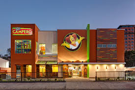
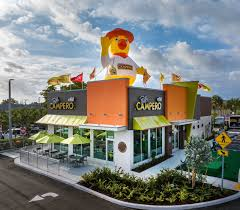
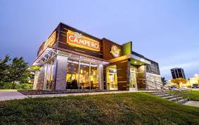

Nuestros Proyectos

Restaurante en Ciudad central
Un espacio con tematica moderna con un menú exclusivo para los amantes de la buena comida.

Restaurante en Ciudad de Antigua Guatemala
Un ambiente acogedor con platillos tradicionales que te harán sentir como en casa.

Restaurante en Pueblo Santa Rosa
Diseño elegante y una experiencia culinaria única en el corazón del Pueblo.